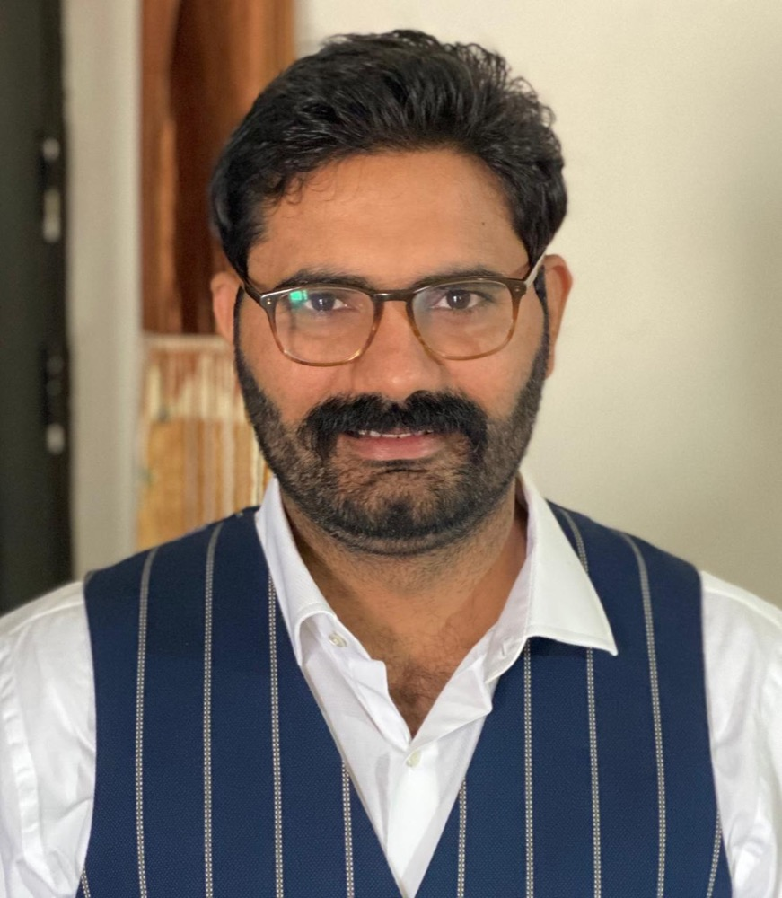

Dr. Rajesh Kumar
Assistant Professor & Head, Computer Science & Applications
Chhaju Ram Memorial (CRM) Jat College, Hisar, Haryana, India
Theoretical Computer Science · Automata Theory ·
Formal Verification · Software Engineering

Profile
Academic and researcher at the meeting point of theory and practice
I am an Assistant Professor and Head of the Department of Computer Science & Applications at CRM Jat College, Hisar. I completed my Ph.D. at Kurukshetra University in 2020, with a thesis on search-based software engineering using metaheuristics, and have taught undergraduate and postgraduate computer science since 2009.
My research centres on automata theory, computational complexity, and formal verification — currently multi-pushdown systems and bounded reachability. Alongside teaching and research, I design and deploy production software for colleges and institutions through my company, Aryan TechLabs, which keeps my theoretical work grounded in real systems.
Education
Ph.D. Computer Science, Kurukshetra University (2020) · MCA (2009) · B.Sc. Non-Medical (2006)
Experience
16+ years teaching across University College Kurukshetra, DCSA Kurukshetra University, and CRM Jat College.
Roles
Head of Department · NAAC Coordinator · Examination Superintendent · NEP Science Coordinator.
Research
Primary research areas
Automata Theory
Pushdown automata, multi-pushdown systems, formal languages, and computational models.
- Pushdown systems
- Formal languages
Computational Complexity
Turing-machine complexity, complexity of language operations, and algorithmic complexity.
- Turing machines
- State complexity
Formal Verification
Reachability analysis under context-, round-, and scope-bounded restrictions.
- Bounded reachability
- Verification
Additional and applied interests: search-based software engineering, genetic algorithms and metaheuristics, artificial intelligence, and machine learning.
Publications
Selected publications
Software
Selected projects
Production systems I built and deployed through Aryan TechLabs, the software company I founded — mostly for colleges, universities, and public institutions.
College ERP
NEP/CBCS college management system — admissions, students, fees, and academics.
NestJS · Prisma · PostgreSQL · Next.js
UEMS
University Employees Management System for Haryana state universities — sanctioned posts and reporting.
NestJS · PostgreSQL · Next.js
PraveshPath
Haryana university admissions eligibility matcher — a public-facing discovery tool.
Django REST · React · PWA
Teaching
Courses taught
- Theory of Computation
- Design & Analysis of Algorithms
- Operating Systems
- Database Management Systems
- Linux & Shell Programming
- Python Programming
- Artificial Intelligence
- Data Analytics using R
Contact
Get in touch
Open to research collaboration, Ph.D. supervision enquiries, and academic correspondence.